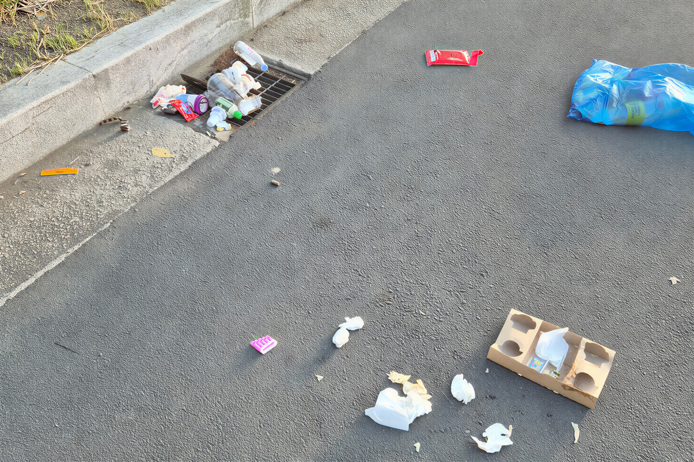

시·도 행사 청소
행사 전부터 종료 후까지 현장을 체계적으로 관리합니다.
행사 전부터 종료 후까지 현장을 체계적으로 관리합니다. 현장 조건과 오염 상태를 먼저 확인하고 필요한 장비와 공정을 적용합니다.

시·도 행사 청소 대상
행사장
관공서
무대
축제
작업 환경과 오염 상태를 확인한 뒤 시설에 맞는 방식으로 진행합니다.
시·도 행사 청소 갤러리
작업 전과 후를 확인할 수 있습니다
작업 과정이 담긴 동영상
사진과 영상 갤러리에서 더 많은 작업 과정을 확인할 수 있습니다.